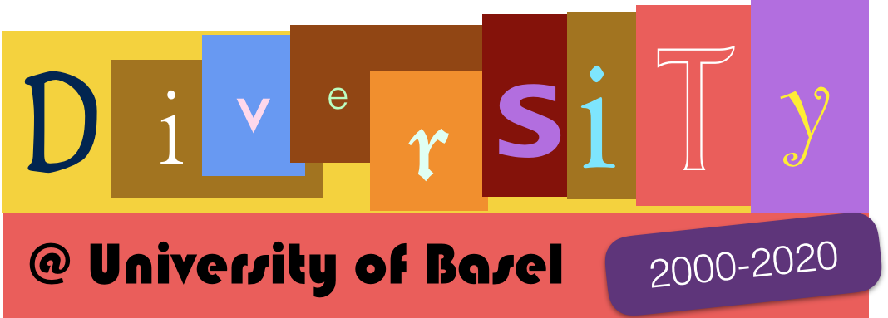
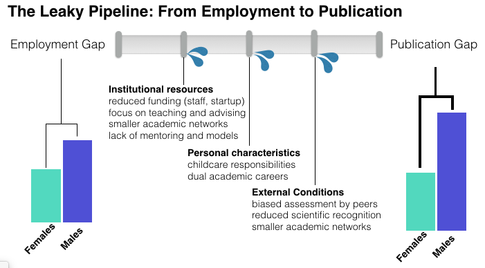
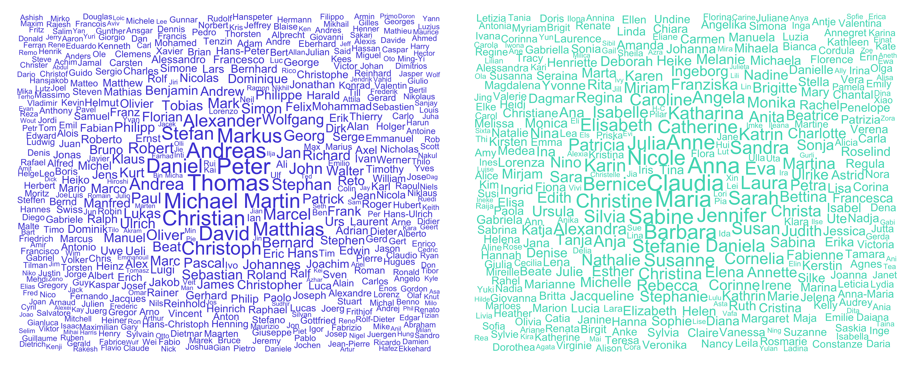
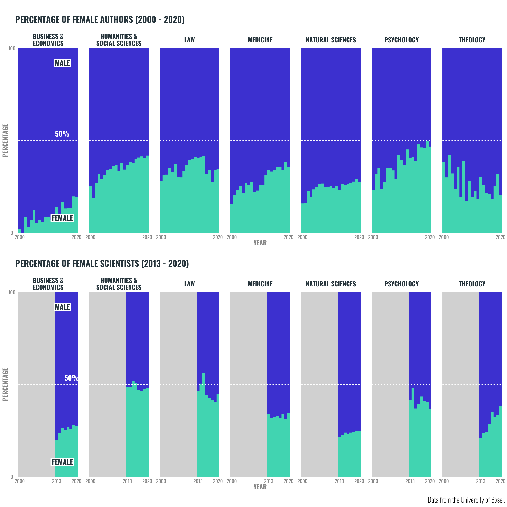
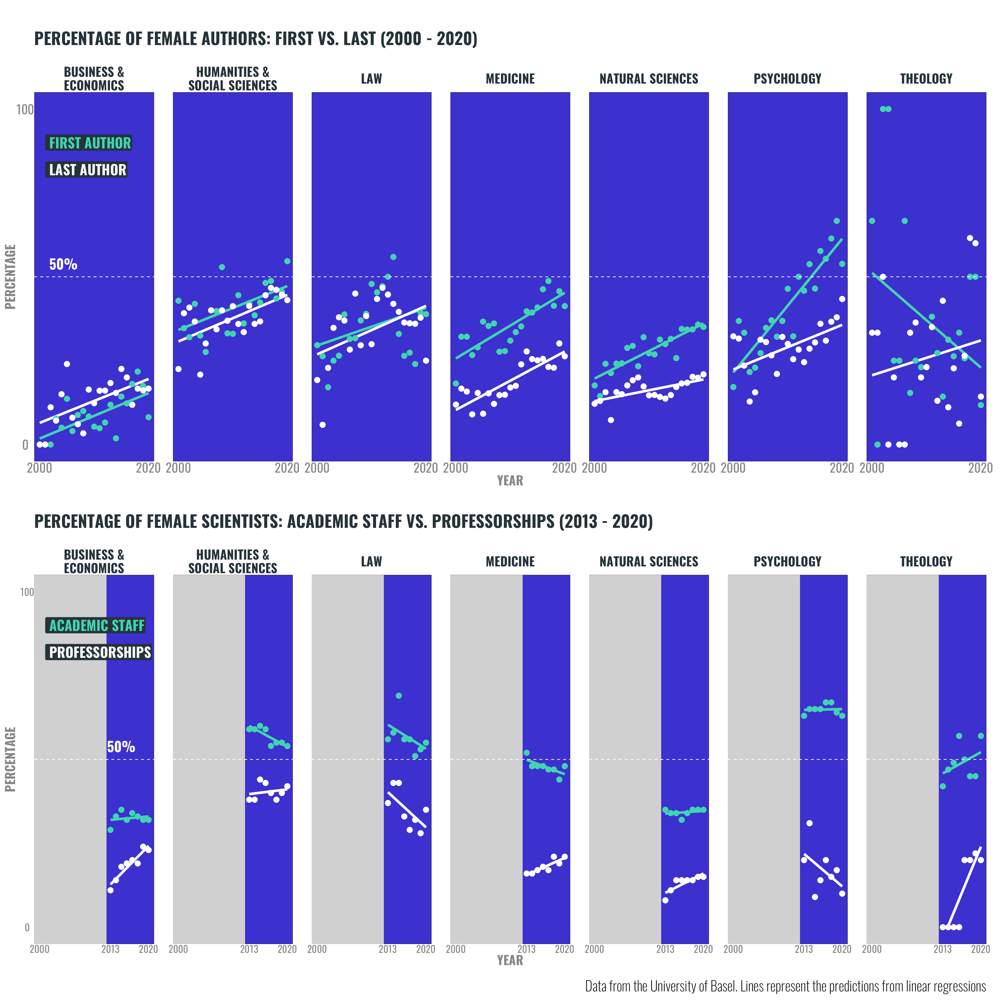

Visualizing gender diversity in research outputs at the University of Basel

Monitoring of diversity is an important first step towards reducing inequalities in access to scientific innovation and research. We contribute to monitoring of author diversity in scientific production at the University of Basel by conducting an analysis of gender distribution in scientific publications. We categorized authors gender based on authors first names and visualized temporal trends between 2000 and 2020 in gender distribution for all 7 faculties of the University of Basel. Our results for the University of Basel match similar reports of gender publication gaps in the sciences: over the past 20 years, there were overall more publications involving males relative to females (69% vs.31%). Crucially, we find large differences across faculties and author positions (first vs.last) suggesting that targeted measures may be needed for different organizational units and career stages.
Achieving gender equality (SDG 5) and reducing inequalities (SDG10) are central parts of the Sustainable Development Goals (SDGs). Universities can play a key role in advancing these goals by empowering women and disadvantaged minorities that allow them to make contributions to scientific innovation and research. The University of Basel is strongly committed to monitoring and increasing diversity of its staff and student population in a number of efforts spearheaded by its Diversity Office.
Monitoring diversity is a first step towards identifying inequalities and potential solutions to reduce them. As a consequence, there have been continued efforts on the part of the Diversity Office of the University of Basel to monitor diversity, for example, in the form of an Equal opportunities monitoring. However, the monitoring of the gender employment gap does not fully capture all aspects of equal opportunities to scientific production. The monitoring of publication outputs can be helpful as an additional indicator because it has the potential to reflect access to resources (e.g., time, internal funding) that go beyond employment and are otherwise not easily quantifiable.
The flow diagram below presents a framework distilled from the existing literature that lists some factors that may contribute to a widening gap between employment and academic output (e.g.Huang et al., 2020; Ni et al.2021, Odic & Woicik, 2020).

To the extent that factors leading to the employment gap are the same or correlated with the factors leading to publication success, one can expect the publication gap to be of the same or greater magnitude than the employment gap. Past work suggests that females are more likely to dedicate more time to teaching, have more family responsibilities, and receive less funding and recognition, each of these contributing to a widening of the gender publication gap over time relative to the extant employment gap. Monitoring the publication gap and, ideally, its underlying causes - particularly the available institutional resources - could be an important contribution of higher-education institutions to advancing equal opportunities in science and innovation.
We use data from a database listing the University of Basels research output. We focus on data between 2000 and 2020 because availability for earlier years is limited and this time range allows some comparability to previous efforts (e.g., Odic & Wojcik, 2019). We focus our analyses on University of Basels 7 faculties and neglect smaller associated institutes because there is a relatively large number of institutes with relatively few publications that make it difficult to consider trends over time.
We analyze a total 64268 research outputs of various kinds, which consist of journal articles (64.1%), book chapters (18.4%), books (edited and authored; 5.4%), proceedings articles (3.1%), theses (2.6%), and other items such as news articles (6.5%).
We use information concerning diversity derived from the authors first names. We recruited existing publicly available services (e.g., genderize.io) to determine each authors individual characteristics, such as gender. Estimates are provided based on the services databases that include hundreds of thousands of confirmed mappings between first names and individuals characteristics. The figure below shows the most frequent male (left) and female (right) names as identified by genderize.io. Additional details are provided on the Data page.

Our report focuses on gender in line with the majority of past monitoring of diversity at the University of Basel and other similar efforts. Ideally, however, diversity should be conceptualized through several dimensions, that could include cultural and socio-economic background, political views, age, nationality, or religion, to name but a few. In our efforts, we strove to include different dimensions beyond gender, namely, nationality and age. Our simple validation efforts suggested, however, that such categorizations are unreliable so we refrain from reporting results concerning these dimensions below. We discuss limitations of our approach and alternative methods in the Limitations sections.
Our analyses used first names to estimate the gender of authors using extant technology. This classification system assigns names to either female or male, thus, providing a traditional, binary classification of gender. The contributors would like to state that this choice is of technical and pragmatic nature and should not be understood as a rejection of more inclusive, non-binary gender definitions.
We also use data from the Equal opportunities monitoring concerning the percentage of females in different positions (i.e., professorships, academic staff) available for the period 2013-2019. We provide this information along side with our results for publications so as to give context concerning the gender distribution in employment for each faculty.
Past work has show a publication gender gap in the sciences (e.g., Huang, Gates, Sinatra, & Barabsi, 2020; Ni, Smith, Yuan, Larivire, & Sugimoto, 2021; Odic & Wojcik, 2020). In what follows, we assess the publication gender gap at the University of Basel based on the outputs available in the universitys research database. The figure below (upper panel) shows the main result of our analysis which makes visible the publication gap over time separately for each of the 7 faculties of the University of Basel for the period 2000-2020. The lower panel provides context by showing information concerning the percentage of females reported in the University of Basels Equal opportuntities monitoring that is available for the period 2013-2020.

The upper panel of the figure above shows evidence of a publication gender gap at the University of Basel. Across all faculties and time, the predominance of the dark blue color indicates there were overall more publications involving males (69%) relative to females (31%). Notwithstanding, the figure suggests a general upward trend in the percentage of publications involving females over the last two decades, while in 2000 the percentage of female authors was 21%, in 2020 this percentage was 35%.
The lower panel depicts the percentage of females employed (professors and research staff) across time and for each faculty. In line with the publication gap figures, across nearly all faculties and time, the predominance of the dark blue color indicates there were overall more male (65%) relative to female researchers (35%) employed at the University of Basel. Naturally, the employment gap largely matches the publication gap identified for each faculty, albeit the difference between employment and publication gaps seems to be larger for some faculties relative to others.
One should further note that the temporal trends concerning the publication gender gap vary markedly between faculties. The table below makes this clearer by showing along with the total number of publications per faculty, the overall percentage of publications involving females, as well as a breakdown for 2000 vs.2020, along with the difference between the two. As can be seen in the table, some faculties have seen a greater increase, most notably the Faculty of Psychology, which saw an increase of 23% from 2000 to 2020.
| Faculty | Pubs | Total % Female | 2000 % Female | 2020 % Female | Diff % |
|---|---|---|---|---|---|
| Business & Economics | 1668 | 10 | 2 | 19 | 17 |
| Humanities & Social Sciences | 16260 | 35 | 26 | 42 | 16 |
| Law | 5687 | 35 | 28 | 35 | 7 |
| Medicine | 11811 | 28 | 16 | 36 | 20 |
| Natural Sciences | 16592 | 24 | 16 | 27 | 12 |
| Psychology | 2959 | 38 | 23 | 47 | 23 |
| Theology | 1707 | 27 | 38 | 20 | -18 |
One possibility to further understand and characterize the dynamics in research productivity is to understand the role of senior and junior researchers and their relative contributions to publications. First authorship is typically (albeit not always) associated with junior academic roles in publications involving multiple authors, while last authorship typically cues seniority. Consequently, distinguishing between first and last authorship can allow us to consider trends in the publication gender gap as a function of career stage, which may be important to devise specific interventions that target more or less senior researchers. When considering these analysis and, particularly, comparing between faculties, it should be noted that determination of authorship order follows different practices across fields (e.g., alphabetical order in economics). Below, we show the breakdown of the publication gap by first vs.last author for publications involving multiple authors. Again, we also present the percentage of females employed in each faculty over time for additional context.

Across almost all faculties there is a trend towards larger proportion of females in first vs.last authorship roles; this pattern matches the larger prevalence of females in junior (academic staff) vs.senior (professorships) roles that is evident in the lower panel.
Crucially, concerning the temporal trend, and matching the previous section concerning the overall percentage of publications, the temporal trends split by first vs.last author show increases over time, with the patterns differing somewhat between faculties. Crucially, the temporal trends observed are not always parallel for first and last authors suggesting that the dynamics underlying academic productivity differed somewhat for the different career stages for some faculties (cf.Natural Sciences, Psychology, Theology).
We identified a persistent and sizable publication gender gap at the University of Basel in the 2000 to 2020 period. This goes beyond the current monitoring of equal opportunities at the University of Basel which focuses mostly on employment (and gender representation in different university committees) but does not consider research output.
Our results show that the publication gender gap has decreased over the last 20 years, albeit at different rates across the 7 faculties that compose the University of Basel.
The publication gender gap is larger and more persistent for last (i.e., senior) authors for some faculties, suggesting that different dynamics are at play for different career stages for some organizational units of the University of Basel.
There are a number of limitations associated with the results we present above, we list and discuss a few of these below.
The number of publications per faculty and year are limited and relatively small for some organizational units (e.g., Theology) which makes difficult to assess trends over time, particularly when distinguishing between authors roles.
We use faculty as organizational unit but some faculties are composed of an heterogeneous number of departments covering different academic fields that may differ from each other in several respects (e.g., Faculty of Natural Sciences). Future work could conduct more specific analysis per department or academic field, albeit smaller number of publications per organizational unit may present a limiting factor for such analyses.
We cannot guarantee that the research database we relied on provides full and equal coverage of all researchers of the University of Basel. Future work could include the use of additional databases (e.g., Dimensions, Scopus, Web of Science) to assess the current coverage of the research database we used.
We used authorship order (i.e., first vs.last author) as a proxy for seniority, however, this practice is deferentially prevalent across fields and time. Using administrative data could be helpful in assessing the role of seniority on academic productivity and the publication gap at the University of Basel.
Our report identifies a gender publication gap but does not address potential underlying causes beyond differences in employment. Additional work could involve using additional monitoring or adopting other approaches such as interviews or targeted questionnaires involving specific groups of researchers to investigate the underlying causes leading to a publication gap.
We should point out that the gender categorization used in our analyzes may function as a proxy for other individual characteristics or personal situations that correlate but are not equivalent to gender. For example, past research suggest that female academics spend more time caring for children and other family members, so gender may capture effects due to family responsibilities rather than gender per se (see also Outlook).
Finally, we analyzed only one dimension of diversity: Gender. The use of similar approaches using other services (e.g., https://www.namsor.com) that categorize other individual characteristics could, however, be used in the future to complement the diversity monitoring of the University of Basel, for example, regarding country of origin or ethnicity.
Our results suggest that the University of Basel could expand its monitoring to assess inequalities in research productivity by measuring research outputs. The type of analysis we present here could also in principle contribute to a broader understanding of diversity at the University of Basel if expanded to include other dimensions (e.g., cultural or ethnic background).
Our results suggest there may be a slightly larger publication relative to an employment gap in some faculties of the University of Basel. Such results emphasize the importance of monitoring developments for specific research cultures, environments, and associated interventions.
More generally, the leaky-pipeline framework underlying our project suggests that the university could overall expand monitoring of factors that contribute to and link the employment and publication gaps, namely, support to academic staff at the junior and senior levels (e.g., startup funds, support staff, lab space, family support).
Huang, J., Gates, A. J., Sinatra, R., & Barabsi, A.-L. (2020). Historical comparison of gender inequality in scientific careers across countries and disciplines. Proceedings of the National Academy of Sciences of the United States of America, 117(9), 46094616. http://doi.org/10.1073/pnas.1914221117
Ni, C., Smith, E., Yuan, H., Larivire, V., & Sugimoto, C. R. (2021). The gendered nature of authorship. Science Advances, 7(36), eabe4639. http://doi.org/10.1126/sciadv.abe4639
Odic, D., & Wojcik, E. H. (2020). The publication gender gap in psychology. American Psychologist, 75(1), 92103. http://doi.org/10.1037/amp0000480